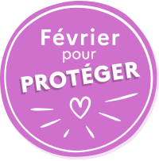
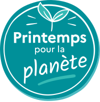
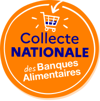
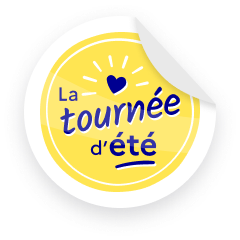
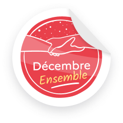
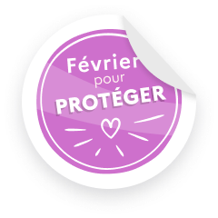
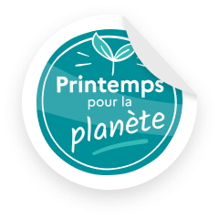
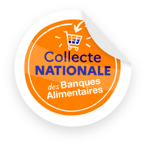

Accueil › Marque
Logo JeVeuxAider.gouv.fr (horizontal / carré, bleu / blanc) et badges/stickers des campagnes annuelles de mobilisation. Source : Figma « Composants JVA », page marque.
Version par défaut — header, contenu éditorial, tout emplacement large et bas.
Fichier : design-system/brand/jva-logo-horizontal-bleu.svg
Fichier : design-system/brand/jva-logo-horizontal-blanc.svg
Version empilée sur 2 lignes (« JeVeux » / « Aider ») — avatar, favicon, tout emplacement contraint en largeur. Tracé vectoriel (SVG).
Fichier : design-system/brand/jva-logo-carre-bleu.svg
Fichier : design-system/brand/jva-logo-carre-blanc.svg
Le fichier source Figma utilise des teintes légèrement différentes entre le logo horizontal et le logo carré (constaté dans les tracés exportés, pas juste un arrondi) — les 2 sont donc documentées séparément plutôt que fusionnées.
| Logo horizontal | Bleu (fond clair) | Blanc (fond bleu/foncé) |
|---|---|---|
| « JeVeuxAider » | #000091 | #FFFFFF |
| « .gouv.fr » | #5B71B9 | #ACB9DB |
| « Par la réserve civique » | #EB786F (identique dans les 2 variantes) | |
| Logo carré | Bleu (fond clair) | Blanc (fond bleu/foncé) |
|---|---|---|
| « JeVeuxAider » | #070191 | #FFFFFF |
| « .gouv.fr » | #5B71B9 | #ACB9DB |
| « Par la réserve civique » | #F95C5E (identique dans les 2 variantes) | |
6 badges ronds, un par campagne annuelle de mobilisation. Tracé vectoriel (SVG), même contrainte que le logo horizontal : ne jamais recomposer à partir de texte. Source : Figma « Composants JVA », logos campagnes badges.
jva-badge-tournee-ete.svg
jva-badge-decembre-ensemble.svg
jva-badge-septembre-apprendre.svg

jva-badge-fevrier-proteger.svg

jva-badge-printemps-planete.svg

jva-badge-collecte-banques-alimentaires.svg
Version « sticker » (coin décollé) des mêmes 6 campagnes, en plus petit format. Export raster (PNG, fond transparent) — l'export SVG de ces nœuds produit un rendu cassé, à ne pas utiliser. Source : Figma « Composants JVA », sticker.

jva-sticker-tournee-ete.png

jva-sticker-decembre-ensemble.png
jva-sticker-septembre-apprendre.png

jva-sticker-fevrier-proteger.png

jva-sticker-printemps-planete.png

jva-sticker-collecte-banques-alimentaires.png